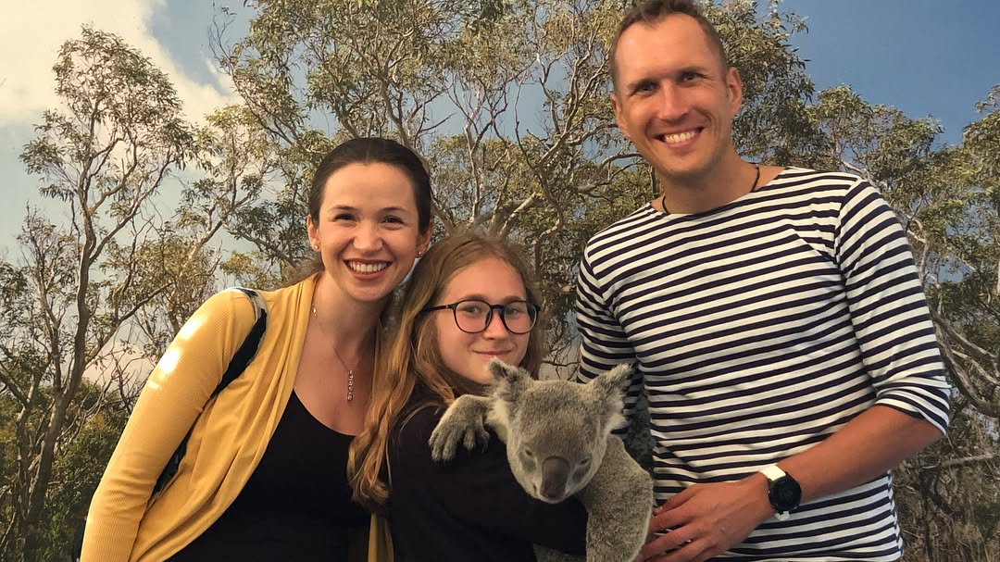

So we are in Cairns and counting down the days till #imcairns 🏊🏼♂️🚴🏼♂️🏃🏽♂️ this is the 3rd time we are coming here for IronMan, however, this time, instead of sharing with you photos of pre-race diet, let us share with you how some of local dwellers eat 😬😉 Local crocs eat only 1/2 chicken per week in June - they don’t need much during winter time (it’s winter in Australia now), one of the fastest (runs 48 kmh!) and biggest in the world endangered rainforest birds - Cassowary - can eat 12 kg of fruits per day! And local cute koalas 🐨 sleep pretty much all day and can eat up to half a kilo of eucalyptus leaves! Btw, the swim course in Cairns has saltwater crocodiles 🐊 - the most dangerous predators 😬 (luckily they swim away during winter season) . . . . . Итак, мы прибыли в Кэрнс и считаем дни до начала #ironmancairns 🏊🏼♂️🚴🏼♂️🏃🏽♂️ мы приезжаем сюда в третий раз на триатлон, но в этот раз, вместо традиционных постов про предгоночное питание, мы вам расскажем как питаются некоторые местные обитатели 😬😉 🐊 местные крокодилы едят всего 1/2 курицы в неделю - они не едят много в зимнее время (зима в Австралии наступает в июне), одна из самых быстрых (развивает скорость до 48 км/ч!) и больших тропических птиц - кассовари - ест до 12 кг фруктов в день! А местные милые коалы 🐨 спят практически целый день напролёт и могут съесть до полукилограмма листьев эвкалипта! Кстати, заплыв в Кэрнс былет проходить в месте, где водятся солоноводные крокодилы 🐊 - самые опасные хищники в мире 😬 (к счастью, они уплывают в более тёплые места в зимний сезон!) —- #cairns #australiawildlife #prerace #preracemeal #ironmantri #ironmantraining #swimbikerun #triathlontraining #triathlon #marathontraining #cyclinglife #triathlondiet #whatsfordinner #whatsforlunch
2018-06-07 21:07:15
Back to main page